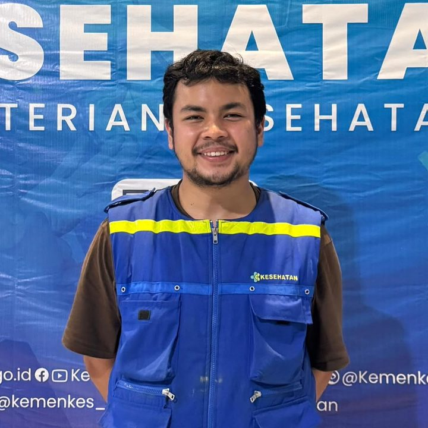
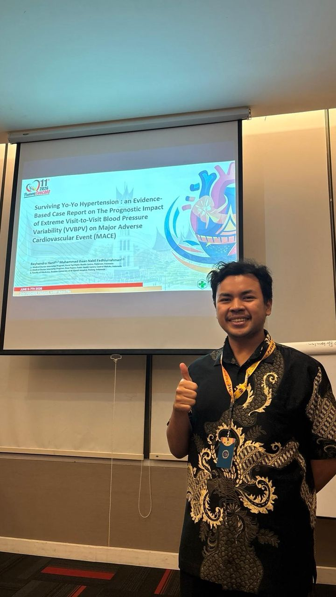

Clinical practice
Emergency & primary care
- Emergency care
- Primary care
- Adult outpatient clinic
- Child outpatient clinic
- Cardiovascular medicine
- Disaster medical response
Medical Doctor · Clinical Researcher
General practitioner focused on cardiovascular medicine and evidence synthesis.
I connect the bedside with the evidence base — from emergency units and community clinics to systematic reviews and meta-analyses that sharpen everyday clinical decisions.
rayhendra.hanif@gmail.com · +62 813-7836-1518 · linkedin.com/in/rayhendra-hanif-32164b190 · orcid.org/0009-0004-8234-2772 · Pariaman, Indonesia

About
I'm a medical doctor trained at the Faculty of Medicine, Andalas University (Bachelor of Medicine 2023, Medical Doctor 2025). My clinical grounding comes from the front lines: emergency-unit shifts at RSUD M. Yamin Pariaman, adult and child clinics at Puskesmas Kurai Taji, and volunteer medical work during the floods in Aceh.
What keeps me curious is the evidence behind each clinical decision, above all in cardiovascular medicine. I've supported a pulmonology meta-analysis as a research assistant, and I've presented my own work on wearable-ECG detection of atrial fibrillation, visit-to-visit blood-pressure variability and infant pertussis at scientific meetings.
My aim is simple: bring rigorous, up-to-date evidence to everyday patient care, and keep asking better questions along the way. Next chapter: Jakarta.
Skills
Front-line clinical practice paired with the methods and software behind rigorous evidence synthesis.
Emergency & primary care
From clinical question to presentation
Analysis toolkit
Spoken & written
Experience
Clinical and research roles, most recent first.
–
Puskesmas Kurai Taji (Kurai Taji Public Health Centre) · Pariaman, West Sumatra
Outcome: selected as an oral presentation finalist at the 11th Padang SymCARD (June 2026).
–
RSUD M. Yamin Pariaman · Pariaman, West Sumatra
–
Office of dr. Fanny Fachruricha, Sp.P(K)
Volunteer
Aceh, Indonesia
Research
Selected presentations and research work. My full publication record is on ORCID.

Oral finalistEvidence-based case report asking whether extreme swings in blood pressure between clinic visits predict major adverse cardiovascular events. Co-authored with Muhammad Ihsan Nabil Fadhlurrahman.
Systematic review and meta-analysis of how accurately wearable ECG devices detect atrial fibrillation, and what that means for starting anticoagulation.
Pediatric case e-poster on pertussis in a young, unvaccinated infant and the role of vaccination timing. Awarded Juara Harapan 1 (first honorable mention) in the e-poster competition.
Research comparing changes in blood pressure and arterial stiffness between people who smoke conventional cigarettes and those who use e-cigarettes.
Education
Faculty of Medicine, Andalas University · Padang
Faculty of Medicine, Andalas University · Padang
11th Padang SymCARD · Padang, West Sumatra
HOPECARDIS
Pediatric Update & Q-SPA · Padang
Contact
Want to work together, collaborate on research, or talk cardiology? My inbox is open.